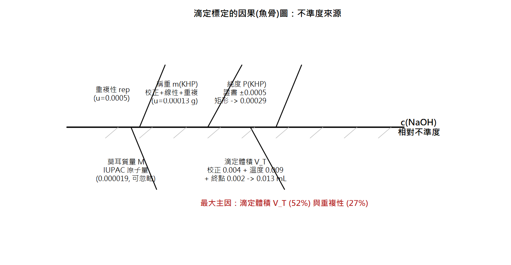

Part 2 量測不確定度（EURACHEM/CITAC QUAM:2012.P1）／第 6 章
量測不確定度：概念與 GUM 四步驟 Uncertainty vs Error — The GUM Estimation Process
你的報告寫「水分 12.3%」，隔壁實驗室寫「12.3 ± 0.4%」。客戶只信後者——這一章開始，你的報告也要長這樣。
🔑 課前暖身
導航說「25 ± 5 分鐘」——這就是不確定度的日常版。
誤差是「事後才知道的單一差距」，不確定度是「事前就能給的合理範圍」。
本章是全課程最重要的觀念轉換點，慢慢讀。
本章新詞先認識：被測量＝你到底在量什麼（要先講清楚）；GUM＝國際通用的不確定度計算流程；隨機/系統誤差＝上上下下的 vs 固定偏一邊的。
名詞卡住了？回 Ch0 名詞圖鑑 查白話解釋與比喻。
本章新詞先認識：被測量＝你到底在量什麼（要先講清楚）；GUM＝國際通用的不確定度計算流程；隨機/系統誤差＝上上下下的 vs 固定偏一邊的。
名詞卡住了？回 Ch0 名詞圖鑑 查白話解釋與比喻。
學習目標
- 說出「誤差」與「不確定度」的本質差異
- 理解為什麼 ISO/IEC 17025 要求實驗室評估不確定度
- 背出 GUM 四步驟流程
- 會畫因果（魚骨）圖整理不確定度來源
6.1 為什麼需要「不確定度」？
QUAM 前言開宗明義：分析結果被用來估算產值、對照規格與法定限量、估計金錢價值。 報告「鉛 9.8 mg/kg」而法規限量 10——到底合不合格？ 沒有不確定度，這個問題沒有答案。這也是 ISO/IEC 17025 實驗室認證的正式要求。
6.2 誤差 vs 不確定度（QUAM §2.4）
誤差 Error
- 單一結果與真值的差
- 是一個「數」，有正負
- 真值不可知 → 誤差永遠無法確切得知（理想化概念）
- 已知時可「修正」（correction）
不確定度 Uncertainty
- 描述「真值合理落點範圍」的參數
- 是一個「區間」（標準差或其倍數）
- 可以估計——用統計與既有資訊
- 不可用來修正結果
📖 GUM 定義（QUAM §2.1）
「與量測結果相關的參數，特徵化可合理歸因於被測量之值的離散性。」
——知道不確定度反而增加對結果的信心，不是懷疑結果。
誤差的組成（QUAM §2.4.5–2.4.13）：
| 組成 | 性質 | 處理方式 |
|---|---|---|
| 隨機誤差 | 不可預測的變異，正負等可能 | 無法補償，但增加觀測次數可縮小 |
| 系統誤差 | 固定或可預測變化（如未扣空白） | 增加次數無效；必須校正／修正，且修正值本身的不確定度要計入 |
| 疏失 spurious error | 人為失誤、儀器故障（抄錯數字、氣泡） | 使量測無效：確認後整筆捨棄，不可納入統計 |
6.3 GUM 四步驟流程（QUAM §4, Figure 1）
| 步驟 | 要做的事 | 關鍵產出 |
|---|---|---|
| Step 1 定義被測量 Specify the measurand | 清楚寫下「測什麼」，並寫出結果與輸入量的數學關係式（寫進 SOP） | 量測模型方程式 |
| Step 2 列出不確定度來源 | 從模型方程式出發，用因果（魚骨）圖系統性列出所有來源，避免重複計算 | 來源清單／魚骨圖 |
| Step 3 量化各成分 | 把每個來源換算成標準不確定度 u(xi)（=標準差）。 可用實驗數據、驗證數據、PT、CRM、文獻或專業判斷 | 預算表 budget |
| Step 4 合成與擴展 | 依傳播法則合成 uc，乘涵蓋因子 k 得 U = k·uc（k=2 ≈95%） | 最終報告 x ± U |
⚡ 省力原則（QUAM 前言）
合成不確定度幾乎完全由最大貢獻項控制。把力氣花在最大的 1~2 個成分，
小成分粗估即可。而且同一方法的不確定度估一次，之後靠 QC 數據確認仍有效即可。
6.4 Step 1 的關鍵：經驗方法（empirical method）
定義被測量時必須分清楚（QUAM §5.4）：
- 方法獨立量：如合金中的鎳——不同方法應得同答案，方法偏倚需校正
- 經驗（操作定義）方法：如「可萃取脂肪」「粗纖維」——結果由方法條件定義， 偏倚是定義的一部分，不修正，不確定度直接以方法表現（如協同試驗 sR）估計
食品分析大量使用經驗方法（粗脂肪、粗纖維、水分…），這個區分直接決定第 10、11 章案例的預算結構。
6.5 Step 2：魚骨圖（因果圖，QUAM Appendix D）
從模型方程式的每個參數長出「大骨」，再往下分「小骨」（校正、溫度、重複性…）。 以第 10 章的滴定案例為例：

圖 6-1 NaOH 標定的因果圖（依 QUAM Figure A2.6 簡化重繪）
✍️ 動手練習
寫出「以 HPLC 測可樂中咖啡因」的模型方程式
（c = 由標準曲線內插 × 稀釋倍數），並列出至少 6 個不確定度來源。
提示：標準品純度、容量瓶、移液管、校正曲線殘差、進樣重複性、基質效應…
# 用模擬「看見」誤差與不確定度的差別
set.seed(123)
true_value <- 100.0
results <- rnorm(30, mean = 100 + 2, sd = 3) # +2 偏倚, SD=3 隨機
mean(results) #> 101.9 <- 測得平均，與真值差 ~+2 = 誤差(偏倚)
sd(results) #> 2.9 <- 散布 = 隨機效應大小
hist(results, breaks = 8, col = "lightblue",
main = "誤差(單點) vs 不確定度(區間)", xlab = "mg/L")
abline(v = 100, col = "darkgreen", lwd = 3) # 真值
abline(v = mean(results), col = "red", lwd = 2, lty = 2)
u <- sd(results)
arrows(mean(results)-2*u, .08, mean(results)+2*u, .08,
code = 3, angle = 90, lwd = 2, col = "purple") # ±U 區間
R Console輸出 output
[1] 101.8587 [1] 2.943092
📊 R vs Excel：不確定度評估的兩大利器
在實務上，評估不確定度與理解其概念時，R 與 Excel 各有其不可替代的角色：
R 語言：模擬與視覺化
- 生成與探索：適合用
rnorm()生成含特定誤差的模擬數據，並用sd()估算隨機效應的不確定度。 - 視覺化：透過
hist(),abline(),arrows()，能直觀畫出真值、偏倚（系統誤差）與不確定度區間的關係，有助理解抽象概念。
Excel：不確定度預算表
- 表格作業：GUM 流程最後的「合成」，本質上是表格作業，Excel 是天然工具。
- 公式計算：將各來源不確定度平方（
=C2^2），再用=SQRT(SUM(D2:D10))求出合成不確定度 uc，最後乘擴展因子（=2*uc）得擴展不確定度。
📊 實驗室實務
⬇ 下載本章 Excel 活頁簿 數據、公式、白話說明都排好了，打開就能算；改黃色儲存格試試看，最後一張工作表會幫你和 R 的答案對照。
業界與實驗室認證（ISO 17025）最常繳交的格式正是 Excel 的「不確定度預算表（uncertainty budget）」。第 8 章會有完整實作。